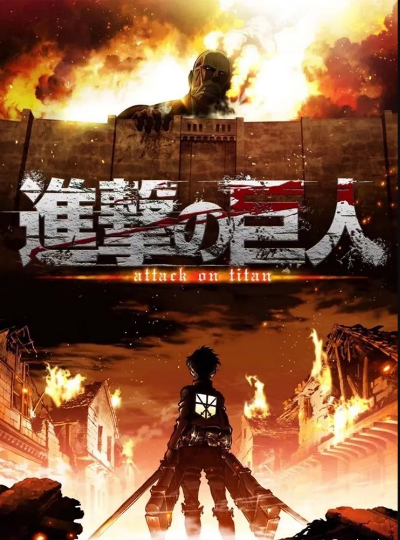
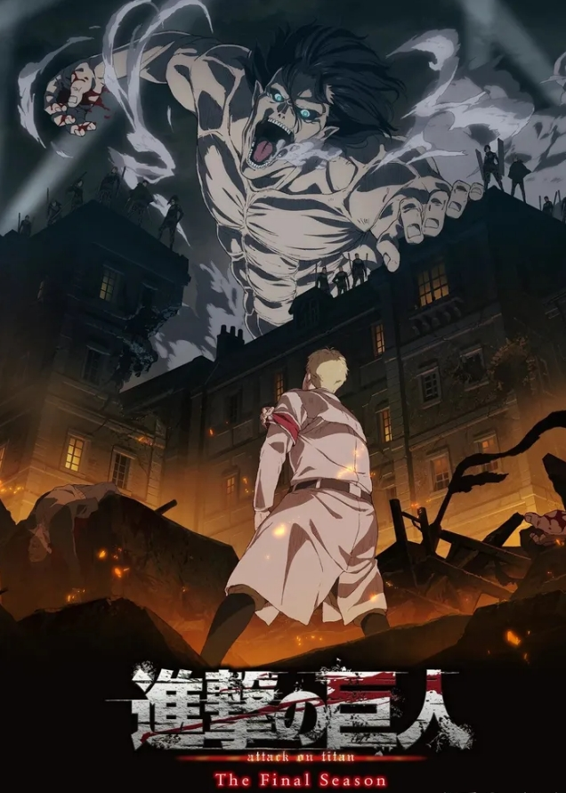

Literary and shocking works always seem to have similar beginnings. The anime masterpiece "Attack on
Titan" with a Douban score of 9.9 is a magical realism work. Its appearance tells people that animation
works can also have profound literary qualities, and such literary qualities are open to the public.
Power and weakness are always opposites, and giants and humans are also natural opposites in the play.
In order to avoid the powerful giants, the weak humans found an isolated island called Parady, built
three walls, and lived in the walls for 100 years. During these 100 years, only a group of lunatics
called the Survey Corps were exploring outside the wall. Why can't this kind of peace last forever?
Because "no man is an island." (Hemingway, "For Whom the Bell Tolls"), walls can stop the evil of
giants, but they cannot stop the inherent evil of human nature. Amin, a wise young man, whose parents
longed for freedom, sacrificed themselves during the investigation outside the wall. Dependent on his
grandfather, he was bullied. Fortunately, he was helped by a neighbor boy named Allen. Mikasa, the "Last
Descendant of the Orient", had her parents murdered by human traffickers because of her mother's and her
own Oriental ancestry. He was later adopted by the Allen family. Allen, a hot-blooded young man, whose
mother was devoured on the day the giant broke the wall, started a battle with Amin and Mikasa to
eliminate the giant.
However, later, they discovered that the giants were also transformed from humans and were descendants
of the ancestor Ymir from outside the island. The essence of giant cannibalism is that humans
cannibalize humans. Over the past 100 years, the truth recorded in history books has only been written
in three words: "People eat people." The opportunity to discover this truth was the infiltration of
three young spies from outside the island. In order to achieve their goals, these three giant teenagers
from outside the island planned to break down the wall, shattering the 100-year peace on the island. In
the chaos, he joined the training soldiers together with the orphaned Allen and others. It turns out
that the betrayer is the partner who once shared life and death. Extreme symmetry, fierce
contradictions, and a twisted world.

The world view perspective is switched to the three betrayers. Rebelio Containment Area, a place similar
to a concentration camp, is where the people from the original ancestor Ymir Island gathered. They live
under the repressive rule of the Malai State and work tirelessly to become honorary Malai people. And
Marais was once enslaved by Ymir, like a cursed reincarnation. Perhaps the greatest historical lesson
for mankind is to never learn the lessons of history. Bertolt, in order to get better medical treatment
for his sick father, worked hard to become one of the giants who sneaked into the wall. Later, he died
gloriously. Mr. Bertot was treated kindly throughout his life and has always been proud of his son. Ani
was adopted by his adoptive father since he was a child and was trained inhumanely just to satisfy his
adoptive father's desire to become an honorary Malay man. But the day before she truly became a giant,
her adoptive father held her in his arms and cried, "Arnie, remember, even if you become the enemy of
the previous world in the future, your father will always be on your side, and you must come back
alive." Reiner, who had long been indoctrinated by his mother to think that people outside the island
were devils, made it his mission to exterminate the people on the island for the sake of the freedom of
the people in the Rebellious District. He truly dedicated himself to the people outside the island and
died. In the end, they are just war machines used by politicians. Those who pursue freedom will
eventually be bound by freedom, and those who pursue happiness will eventually be burdened by happiness.
Great works often try to solve the most eternal topics of mankind, such as freedom and human nature.